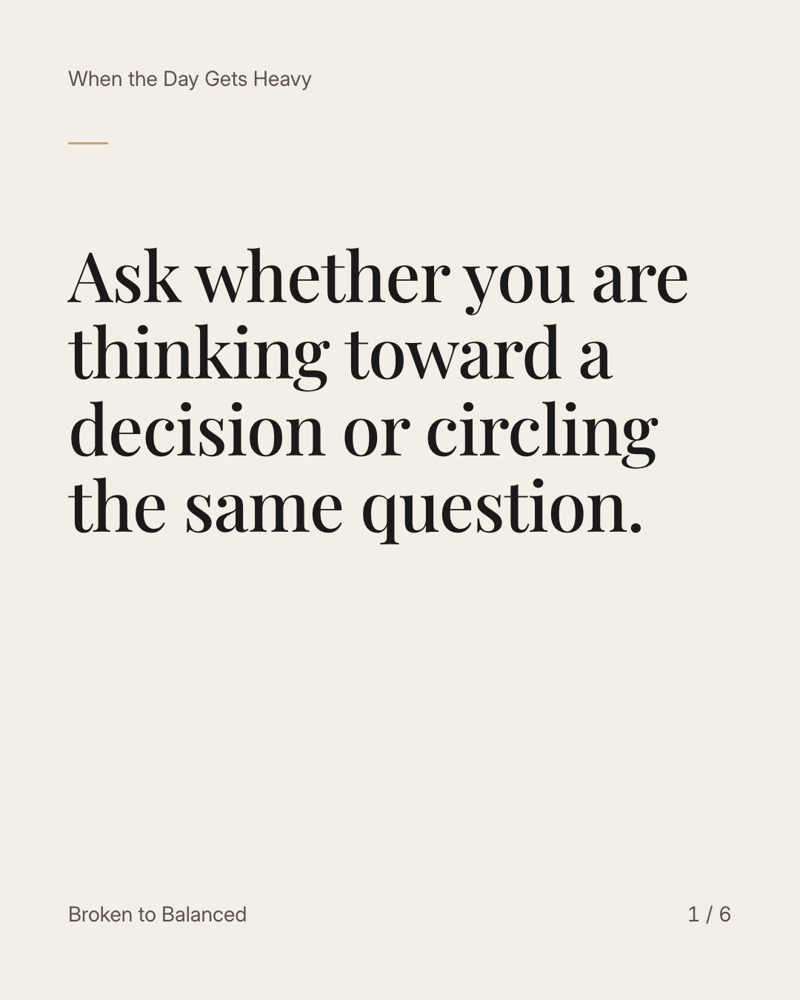
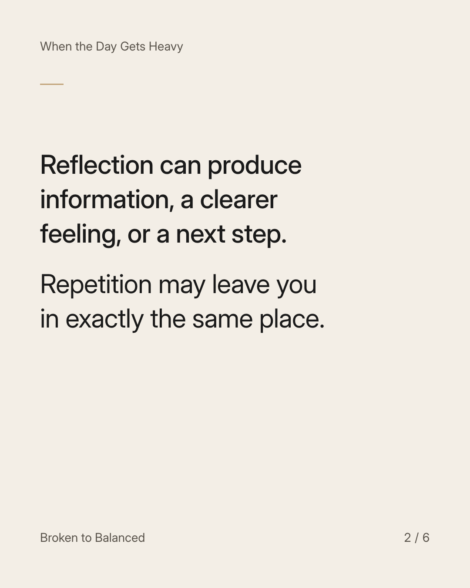
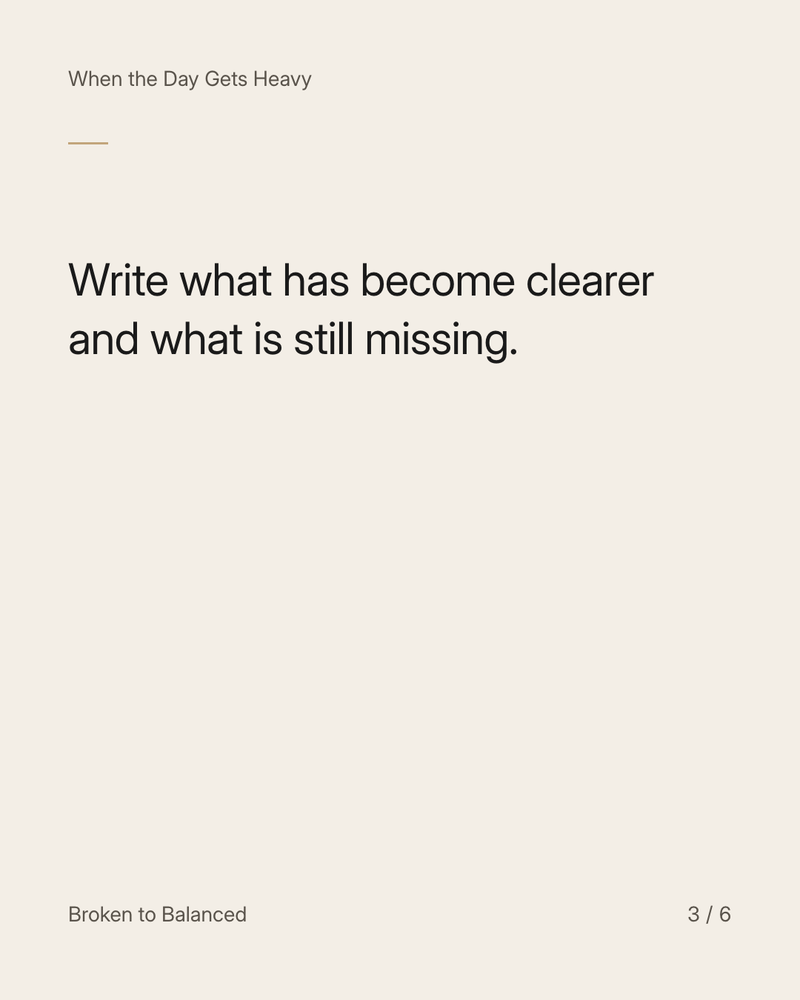
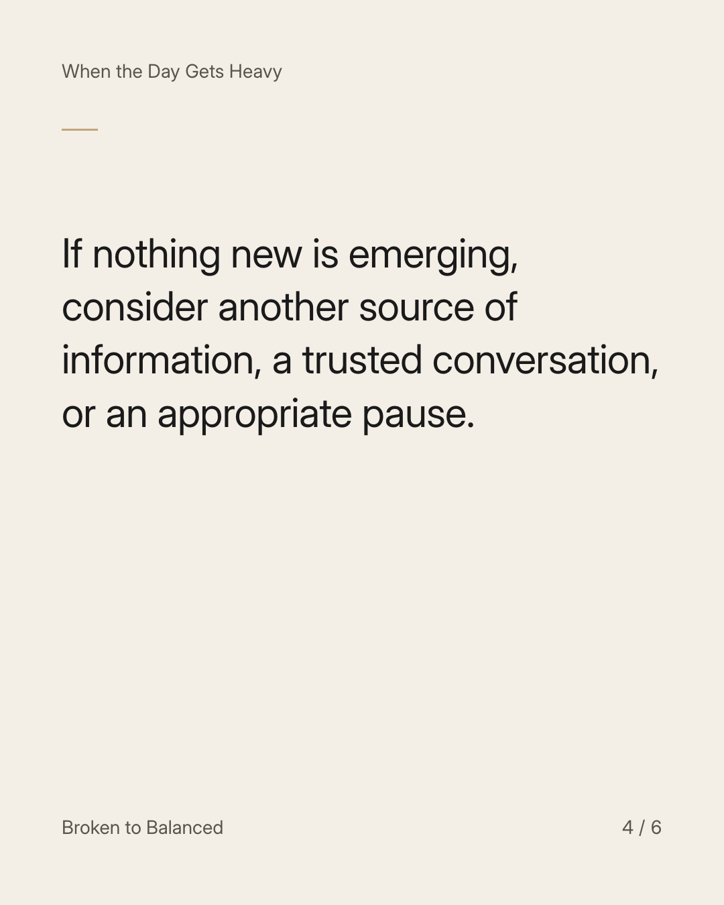
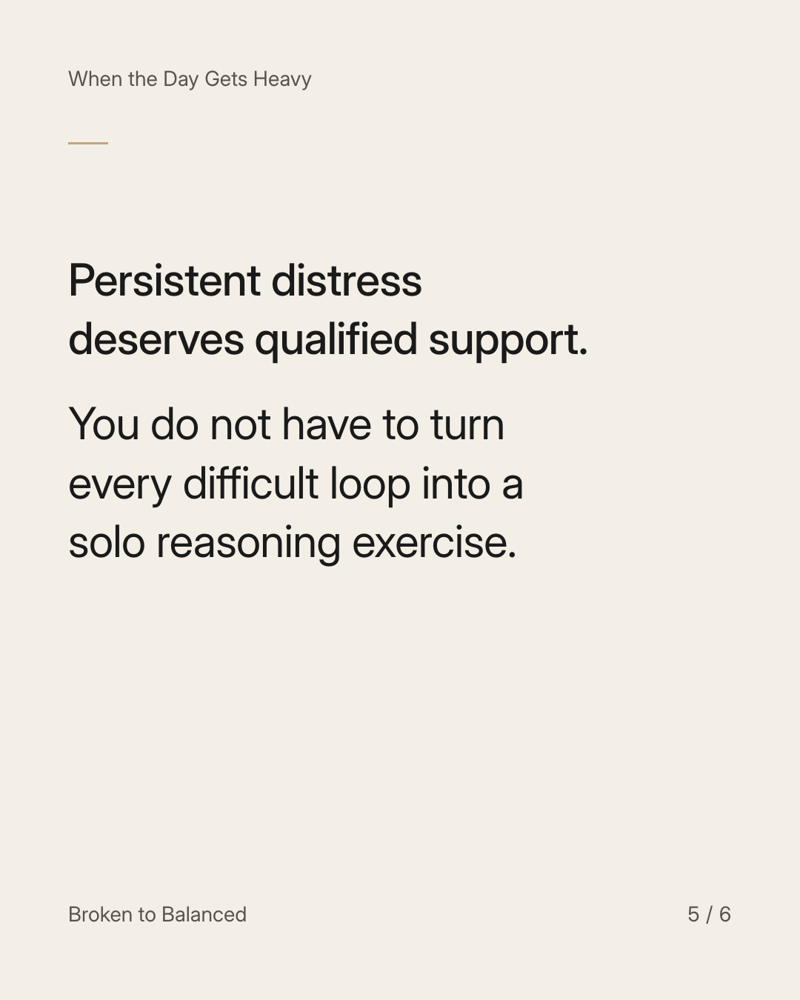
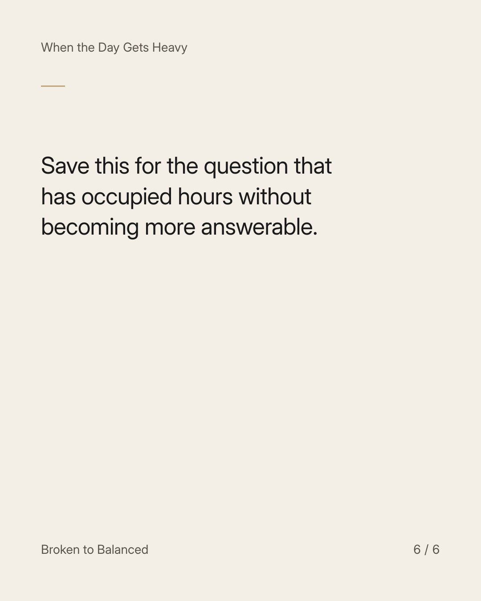

Exact text and accessibility text
Ask whether you are thinking toward a decision or circling the same question.
Slide 1 of 6. Ask whether you are thinking toward a decision or circling the same question.


Exact text and accessibility text
Reflection can produce information, a clearer feeling, or a next step. Repetition may leave you in exactly the same place.
Slide 2 of 6. Reflection can produce information, a clearer feeling, or a next step. Repetition may leave you in exactly the same place.


Exact text and accessibility text
Write what has become clearer and what is still missing.
Slide 3 of 6. Write what has become clearer and what is still missing.


Exact text and accessibility text
If nothing new is emerging, consider another source of information, a trusted conversation, or an appropriate pause.
Slide 4 of 6. If nothing new is emerging, consider another source of information, a trusted conversation, or an appropriate pause.


Exact text and accessibility text
Persistent distress deserves qualified support. You do not have to turn every difficult loop into a solo reasoning exercise.
Slide 5 of 6. Persistent distress deserves qualified support. You do not have to turn every difficult loop into a solo reasoning exercise.


Exact text and accessibility text
Save this for the question that has occupied hours without becoming more answerable.
Slide 6 of 6. Save this for the question that has occupied hours without becoming more answerable.
Exact caption
Plain-text fallback: select and copy the caption.